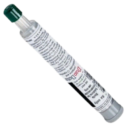

Autoinyector ATNA
| Autoinyector ATNA | |||||||||||||
|---|---|---|---|---|---|---|---|---|---|---|---|---|---|
|
 |
|||||||||||||
| Objeto | |||||||||||||
|
|||||||||||||
| Medicamento | |||||||||||||
| Vía(s) de administración | IM | ||||||||||||
| Rango de dosis | ≥3 inyecciones | ||||||||||||
| Efectos del medicamento | |||||||||||||
|
|||||||||||||
| Técnico | |||||||||||||
ACM_Autoinjector_ATNA
|
|||||||||||||
El autoinyector ATNA (Antidote Treatment, Nerve Agent) es un dispositivo utilizado para administrarse fácilmente un antídoto en caso de exposición a agentes nerviosos.
Función
El autoinyector ATNA se utiliza para administrar rápidamente un antídoto contra la exposición a agentes nerviosos sin necesidad de preparar una dosis de medicamento líquido.
Dependiendo de la gravedad, pueden ser necesarias múltiples inyecciones para tratar completamente la exposición.
Se administra por vía intramuscular con inicio rápido, pico moderado y duración prolongada.
Uso
La acción Usar autoinyector ATNA está disponible en las extremidades en la pestaña Medicamento.
Dosis recomendada
3 o más inyecciones dependiendo de la gravedad de la exposición.
Efectos
- Frecuencia cardíaca: ++
- Presión arterial: +
- Frecuencia respiratoria: N/A
Posibles complicaciones
- Taquicardia
- Paro cardíaco
Indicaciones
- Exposición a agentes nerviosos
Contraindicaciones
- Taquicardia (si no está causada por agentes nerviosos)